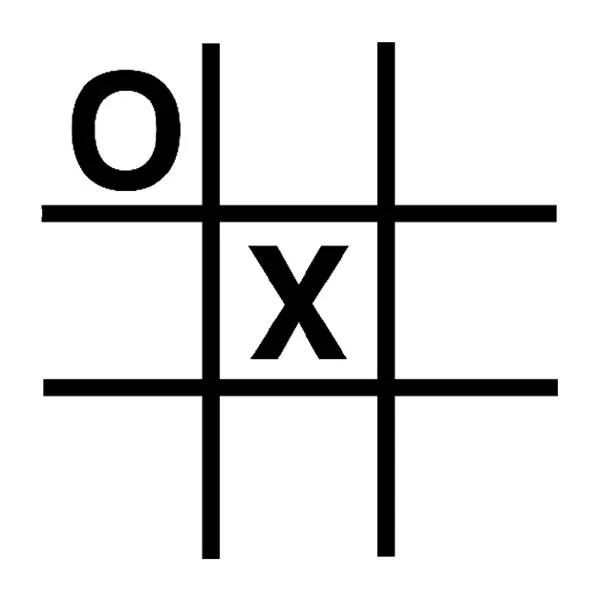

<mat-toolbar class="navColor">
    <button mat-raised-button (click)="Deslogearse()" class="nav-link">DESLOGUEARSE</button>


    <button  mat-raised-button routerLink="../chat" class="nav-link " style="margin: 10px;">CHAT</button>

</mat-toolbar>


<div class="bgimg">
    
<br>

<br>
 
    <div class="testclass">
        <div align='center'>
            <mat-card class="example-card">
                <mat-card-header>
                    <mat-card-title>TA TE TI</mat-card-title>
                    <mat-card-subtitle>Tres en raya</mat-card-subtitle>
                </mat-card-header>
                
                <mat-card-content>
                    <p>
                        El juego consiste en marcar 3 figuras en linea recta o diagonal.
                    </p>
                </mat-card-content>
                <mat-card-actions>
                    <button   mat-raised-button routerLink="/juegos/tateti"  >Jugar</button>
                </mat-card-actions>
            </mat-card>

        </div>


        

    </div>

    

</div>


<div class="testclass">
    <div align='center'>
        <mat-card class="example-card">
            <mat-card-header>
                <mat-card-title>PIEDRA PAPEL O TIJERA</mat-card-title>
                <mat-card-subtitle>Tres en raya</mat-card-subtitle>
            </mat-card-header>
            
            <mat-card-content>
                <p>
                    El juego consiste en marcar 3 figuras en linea recta o diagonal.
                </p>
            </mat-card-content>
            <mat-card-actions>
                <button   mat-raised-button routerLink="/juegos/piedrapapeltijera"  >Jugar</button>
            </mat-card-actions>
        </mat-card>